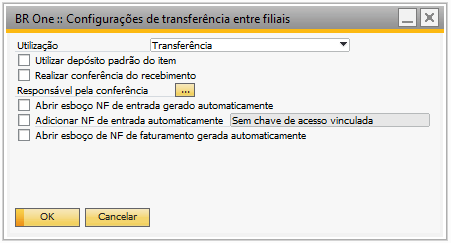
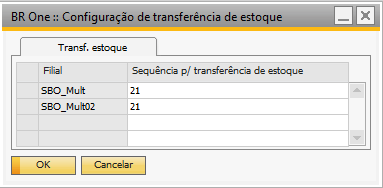

Configurações de transferência entre filiais
Para acessar o cadastro de Configurações de transferência entre filiais é necessário ir no menu:
Administração -> Definição -> Estoque -> Configurações de transferência entre filiais
Utilização
Essa utilização será usada nos documentos de NF de Saída e NF de Entrada. Serão carregadas apenas as que em seu cadastro possuírem a flag “PN Gratuito”, marcada e a flag “Transf. Estoque” desmarcada.

Utilizar depósito padrão do item
Caso a flag Utilizar depósito padrão do item, estiver marcada a entrada de mercadoria ocorrera no depósito padrão do item, conforme cadastro.
E caso ela esteja desmarcada, a entrada de mercadoria ocorrera conforme Configuração depósito para referência de acordo com depósito “DO depósito” da transferência de estoque.
Configuração depósito para referência
Para acessar o cadastro de Configuração depósito para referência é necessário ir no menu:
Administração -> Definição -> Estoque -> Configuração de depósito para referência
É preciso fazer a configuração tanto de uma Filial para Matriz, quanto da Matriz para a Filial, para que o add-on consiga identificar para qual depósito deve fazer entrada de mercadoria se necessário realizar a busca.
Filial de: Matriz
Filial Para: Filial

Filial de: Filial
Filial Para: Matriz

Abrir esboço NF de entrada gerado automaticamente
Se o parâmetro estiver marcado, a Nota Fiscal de Entrada – Esboço será exibida na tela ao adicionar a NF de Saída. Caso o parâmetro esteja desmarcado e o parâmetro “Adicionar NF de Entrada automaticamente” também não esteja marcado, será necessário acessar a tela Trans. Filiais – Relatório de NF de Entrada pendentes.
Adicionar NF de entrada automaticamente
Sem chave de acesso vinculada
Ao adicionar uma nota fiscal de saída, automaticamente será gerado uma nota fiscal de entrada sem a necessidade da chave de acesso através da DI.
Com chave de acesso vinculada
É necessário definir um add-on fiscal, para assim que adicionar uma nota fiscal de saída o add-on possa enviar as informações para SEFAZ autorizar e gerar a chave de acesso, para quando gerar a nota fiscal de entrada por DI o campo da chave de acesso seja preenchido automaticamente.
Definir add-on fiscal
Administração -> Inicialização do sistema -> Configurações do documento -> Aba BR One

Configuração de transferência de estoque (utilizado para processo no MRP)
Para acessar a tela é necessário ir no menu:
Administração -> Definição -> Estoque -> Configuração de transferência de estoque.
Deve ser informada qual a sequência de transferência de estoque será utilizada para o processo de geração através do MRP.
Configuração - Priorização de transferência de estoque (utilizado para processo no MRP)
Para acessar a tela é necessário ir no menu:
Administração -> Definição -> Produção -> Priorização de transferência de estoque
Deve ser informado um depósito no campo “Depósito Principal”, no cabeçalho e nas linhas deve ser listado a ordem de recuperação dos depósitos para realizar a transferência caso o depósito principal não tenha saldo suficiente.

São definidos os depósitos de sugestão de transferência de estoque de acordo com o deposito principal que receberá a recomendação no MRP caso algum deposito cadastrado possua a quantidade recomendada, será sugerido a transferência o item sem necessidade de compra ou produção.